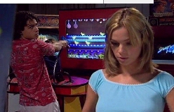

HOUVE UMA VEZ DOIS VERÕES (HUBO UNA VEZ DOS VERANOS)
|
(DV/35 mm, 75 min, color, 2002) Chico, adolescente de vacaciones en la "mayor y peor playa del mundo", encuentra Roza en una tragaperras y se enamora. Duermen juntos la primera noche, pero ella desaparece. Al lado de su amigo Juca, Chico busca a Roza por la playa, en vano. Sólo más tarde, ya en Porto Alegre y en las clases de química orgánica, es que él va reencontrarla. Chico quiere conversar sobre "aquella noche", pero Roza le cuenta que está embarazada. Hasta el próximo verano, ella aún va a entrar y salir muchas veces de su vida. |
 André Arteche y Ana Maria Mainieri |
{kind=link}
Dirección: Jorge Furtado
Producción Executiva: Nora Goulart e Luciana Tomasi
Guión: Jorge Furtado
Dirección de Fotografia: Alex Sernambi
Dirección de Arte: Fiapo Barth
Música: Leo Henkin
Planejamento de Producción: Ana Luiza Azevedo
Dirección de Producción: Marco Baioto e Débora Peters
Montaje: Giba Assis Brasil
Assistente de Dirección: Alfredo Barros
Una Producción Casa de Cinema PoA
Reparto Principal
André Arteche (Chico)
Ana Maria Mainieri (Roza)
Pedro Furtado (Juca)
Júlia Barth (Carmem)
Victória Mazzini (Violeta)
Premiaciones
- 12° Cine Ceará, Fortaleza, 2002:
Mejor Película (Premio de la Crítica), Mejor Dirección, Mejor Guión y Mejor Montaje. - 5º Festival del Cine Brasileño de París (Francia), 2003:
Mejor Película (Jurado Oficial). - 4° Gran Premio Cine Brasil, 2003:
Mejor Guión Original. - 2° Down Under International Film Festival, Darwin (Australia), 2004:
Ne Screenplay.
Crítica
"Es mejor entonces mantener una mirada desconfiada para los elogios caretas a “Hubo una vez dos veranos”. Seguro que es muy bueno que tengamos una Película tan agradable, con una estructura tan eficiente y una delicadeza tan grande con sus personajes - pero lo más importante en eso no es el hecho de que la Película se comunica bien con su platea, es el hecho de que él tiene qué comunicar, al contrario de lo que piensan algunos. Si la narrativa usa esquemas de estructura de guión con naturalidad e inteligencia, sin parecer enyesada o programada, no es eso que torna la Película rica, es su interés por los dramas de sus personajes - y el origen de esto no está en los manuales de guión."
(Daniel Caetano, revista virtual CONTRACAMPO, enero/2003)"Jorge Furtado demuestra hábil capacidad de lanzar chistes y tiradas en la falda del espectador como cargas explosivas, cosa inusual en el texto nacional para cine. (...) Los despliegues, a lo largo de 80 minutos magros, son consistentes, dejando al espectador con sonrisa constante y, de vez en cuando, a las carcajadas. Producto competente, comunicativo y capaz de establecer diálogo inteligente con el público."
(Kleber Mendonça Filho, JORNAL DO COMÉRCIO, Recife, 01/11/2002)"Una de las Películas más buenas producidas en Brasil este año, HUBO UNA VEZ DOS VERANOS tiene guión y dirección de Jorge Furtado, par de Guel Arraes en Caramuru y uno de los más alabados cineastas brasileños. Furtado, por tanto, garantiza la calidad de este que es su primer largometraje. (...) No se pierda: es una Película hecha con lenguaje ágil y diálogos certeros, que encanta a jóvenes y adultos."
(DIÁRIO DE PERNAMBUCO, Recife, 01/11/02)"Pare y piense. ¿Cuántas veces el cine brasileño produjo cintas volcadas para el público adolescente? Tal vez por la escasez, el simpático HUBO UNA VEZ DOS VERANOS sea parecido con un oasis en el desierto. (...) Con lenguaje coloquial, diálogos sabrosos y movido al sonido underground de Wander Wildner, Ultramen y Sombrero Luminoso, entre otros roqueros del sur, la Película sólo tiene la pretensión de divertir al espectador por poco más de una hora. Lo logra."
(Miguel Barbieri, VEJA SÃO PAULO, 01/10/2002)"HUBO UNA VEZ DOS VERANOS no sufre de la anemia intelectual típica de las producciones teens actuales, sin dejar, sin embargo, de ser saludablemente pop. (...) La corta Película (tiene poco más de una hora y diez minutos de duración) llama la atención por el excelente guión y por los diálogos llenos de humor y que salen de lo obvio. Furtado cuenta que los actores ayudaron en la creación de los personajes."
(Bruno Porto, O GLOBO, Río de Janeiro, 24/09/2002)"El simples hecho de un equipo riograndense, dirigido por Jorge Furtado, haber hecho una producción declaradamente juvenil, merece elogios, si no por otra cosa, que es como mínimo el pionerismo. Para decir la verdad, él no contaba siquiera con un parámetro a seguir, un confronto para negar. Y pues ¿no es que, para sorpresa general, lo ha hecho con competencia, gracia y sobretodo liviano? (...) La ventaja de la Película de Jorge Furtado sobre las porno chanchadas y las obras de arte que, de una manera u otra, abordaron todo eso relacionado ahí en cima, es que: (1) lo hace sin ninguna pretensión de filosofar profundamente sobre cada uno de ellos; (2) tiene un abordaje leve y bien humorado, lo que no significa que sea también obligatoriamente superficial, al contrario."
(José Nêumanne, JORNAL DA TARDE, São Paulo, 22/09/2002)"En cartelera en São Paulo, HUBO UNA VEZ DOS VERANOS consigue retratar los adolescentes, sus dudas y ansiedades con irreverencia y fidelidad. Furtado construye personajes que tienen como triunfo una aparente normalidad. Son jóvenes sin ser afectados y sin rótulos estampados en la frente, gente común que uno cree que la que puedes encontrar a toda hora en cualquier lugar. (...) En lugar de pirotecnias tecnológicas, Furtado usó dos armas: un guión bien estructurado, con un humor sutil, y un modo de filmar clásico, seguro, sin grandes invenciones."
(Guilherme Werneck, FOLHATEEN, São Paulo, 16/09/2002)"Hay una belleza tal vez en segundo plano en esa Película despojada, y que envuelve la naturaleza misma del acto amoroso. Nadie es realista cuando está enamorado. Cuando se consigue ser objetivo, es porque la pasión ya se fue. Cuando se tiene una decepción con el ser amado, lo que ocurre no es que el decepcionado comienza a mentir a si mismo. Eso sería simplista. Él pasa a desarrollar un tipo elaborado de raciocinio, tal vez delirante, que consistirá en atribuir razones y motivaciones ocultas para el acto de la persona amada, de tal forma que ese acto pase a ser, si no disculpable, por lo menos comprensible. Y así mantendrá la creencia en la previsibilidad del comportamiento del otro, y alimentará la esperanza en el futuro. Cuando ese mecanismo sea desmontado, será señal de que la pasión pasó, como pasan los veranos."
(Luiz Zanin Oricchio, O ESTADO DE SÃO PAULO, 06/09/2002)"EL AMOR VE A LO LEJOS: El primer largo-metraje del principal director brasileño de cortos es no tiene pretensiones, pero es sabio. (...) Los actores se destacan por la autenticidad y las imágenes captadas con cámara digital sirven al tono poético. Pero el punto alto está en la generosidad con los personajes. Furtado no choca en posturas moralistas, no juzga las chicas de carácter cuestionable y huye de la vulgaridad de las comedias juveniles americanas. (...) La sabiduría del director está en mostrar que, en vez de ciego, el amor ve esencias por detrás de las acciones. Ve lejos lo suficiente para detectar belleza en seres con actitudes condenables por el sentido común."
(Cléber Eduardo, Revista ÉPOCA, 02/09/2002)
19/04/2002